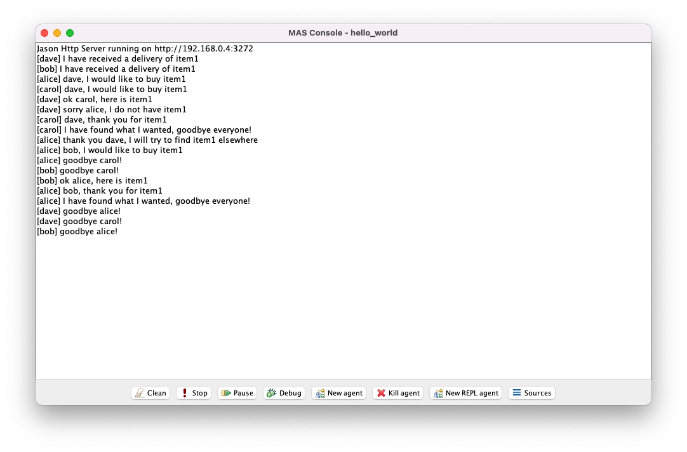
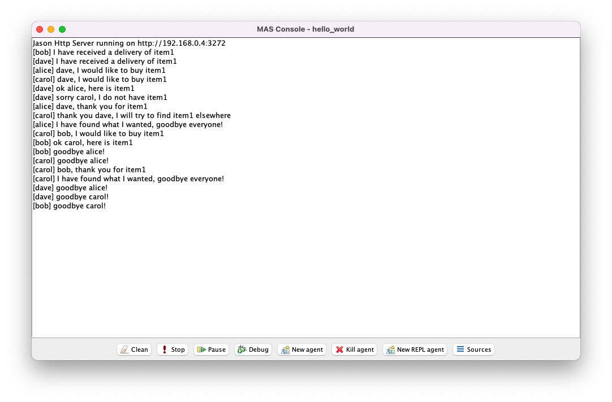

To implement a virtual environment in Jason you must implement a Java class that extends the default jason.environment.Environment Java class included in Jason and then override some of its methods.
// src/java/hello_world/MarketEnvironment.java
package hello_world;
import jason.asSyntax.ASSyntax;
import jason.asSyntax.Structure;
import jason.asSyntax.parser.ParseException;
import jason.environment.Environment;
public class MarketEnvironment extends Environment {
@Override
public void init(String[] args) {
try {
this.addPercept(ASSyntax.parseLiteral("seller(bob)"));
this.addPercept(ASSyntax.parseLiteral("seller(dave)"));
this.addPercept("bob", ASSyntax.parseLiteral("delivery(item1)"));
this.addPercept("dave", ASSyntax.parseLiteral("delivery(item1)"));
} catch (ParseException e) {
e.printStackTrace();
}
}
@Override
public boolean executeAction(String agName, Structure act) {
try {
Structure leave = ASSyntax.parseStructure("leave");
if(act.equals(leave)) {
this.addPercept(ASSyntax.parseLiteral("leaving(" + agName + ")"));
return true;
}
} catch (ParseException e1) {
e1.printStackTrace();
}
return false;
}
}
The file src/java/hello_world/MarketEnvironment.java can be explained as follows:
seller(bob), seller(dave), and delivery(item1).leave.The percepts seller(bob) and seller(dave) are sensed by all agents whereas the percept delivery(item1) is sensed by bob and dave only.
When executed by agent X, the environment action leave has the effect of adding a new percept leaving(X) to the environment.
All percepts are automatically annotated by Jason with source(percept), e.g.\ percept delivery(item1) also takes the form delivery(item1)[source(percept)].
Annotations can be freely omitted and ignored in agent files.
Remove the initial beliefs from src/asl/buyer_agent.asl and src/asl/seller_agent.asl and add two new plans to each file to handle the effect of environment action leave.
# src/asl/buyer_agent.asl
/* Initial beliefs and rules */
/* Initial goals */
!buy(item1).
/* Plans */
+!buy(X) : seller(Y) & not out_of_stock(X)[source(Y)] <- .print(Y, ", I would like to buy ", X); .send(Y, tell, want(X)).
+!buy(X) : true <- .print("it looks like ", X, " is unavailable").
+recieve(X)[source(Y)] : true <- .print(Y, ", thank you for ", X); .print("I have found what I wanted, goodbye everyone!"); leave.
+out_of_stock(X)[source(Y)] : true <- .print("thank you ", Y, ", I will try to find ", X , " elsewhere"); !buy(X).
+leaving(X) : .my_name(X) <- .kill_agent(X).
+leaving(X) : true <- .print("goodbye ", X, "!").
# src/asl/seller_agent.asl
/* Initial beliefs and rules */
/* Initial goals */
/* Plans */
+delivery(X)[source(percept)] : true <- .print("I have received a delivery of ", X); +in_stock(X).
+want(X)[source(Y)] : in_stock(X) <- -in_stock(X); .print("ok ", Y, ", here is ", X); .send(Y, tell, recieve(X)).
+want(X)[source(Y)] : not in_stock(X) <- .print("sorry ", Y, ", I do not have ", X); .send(Y, tell, out_of_stock(X)).
+leaving(X) : .my_name(X) <- .kill_agent(X).
+leaving(X) : true <- .print("goodbye ", X, "!").
Lines 14-15 in src/asl/buyer_agent.asl and Lines 12-13 in src/asl/seller_agent.asl are identical.
Semantically, the plans say that if the agent obtains a belief that some agent X is leaving the environment, then the agent should terminate its own run if X refers to itself, otherwise it should say goodbye to X (since X refers to some other agent).
Notice that this implementation relies on the fact that plans are ordered in Jason according to the (top-to-bottom) order that they appear within the .asl file.
Thus, the second plan is only selected if the context of the first plan does not hold.
An alternative approach is to replace the context true with an independent check .my_name(Y) & X \== Y.
The latter approach is less efficient but is also less likely to introduce bugs into your implementation.
Note: The token
.my_name(X)is another example of a Jason internal action. For completeness, it is worth mentioning that internal actions may appear in contexts and plan bodies whereas environment actions may only appear in plan bodies. A list of available internal actions within Jason can be found here.
Set the MarketEnvironment class as the agents' environment and create two new agents carol and dave as instances of buyer_agent and seller_agent, respectively.
// hello_world.mas2j
MAS hello_world {
infrastructure: Centralised
environment: hello_world.MarketEnvironment
agents:
alice buyer_agent;
bob seller_agent;
carol buyer_agent;
dave seller_agent;
aslSourcePath:
"src/asl";
}


These screenshots show two possible executions of the same Jason project.
Notice that bob sells to alice in the first execution but sells to carol in the second execution.
There are many reasons why the same Jason project may result in different executions, including the definition of selection functions, the ordering of belief bases, the ordering of plan libraries, and the scheduling of agents in each interpreter cycle.
Most of these situations can be controlled and/or configured when necessary, but the topic is beyond the scope of this tutorial.